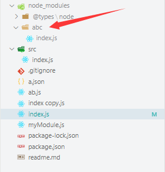
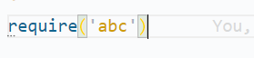
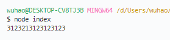
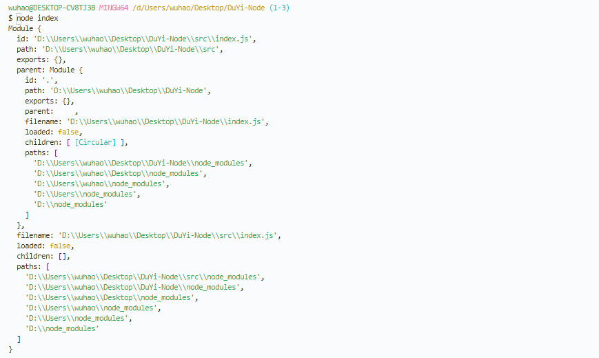
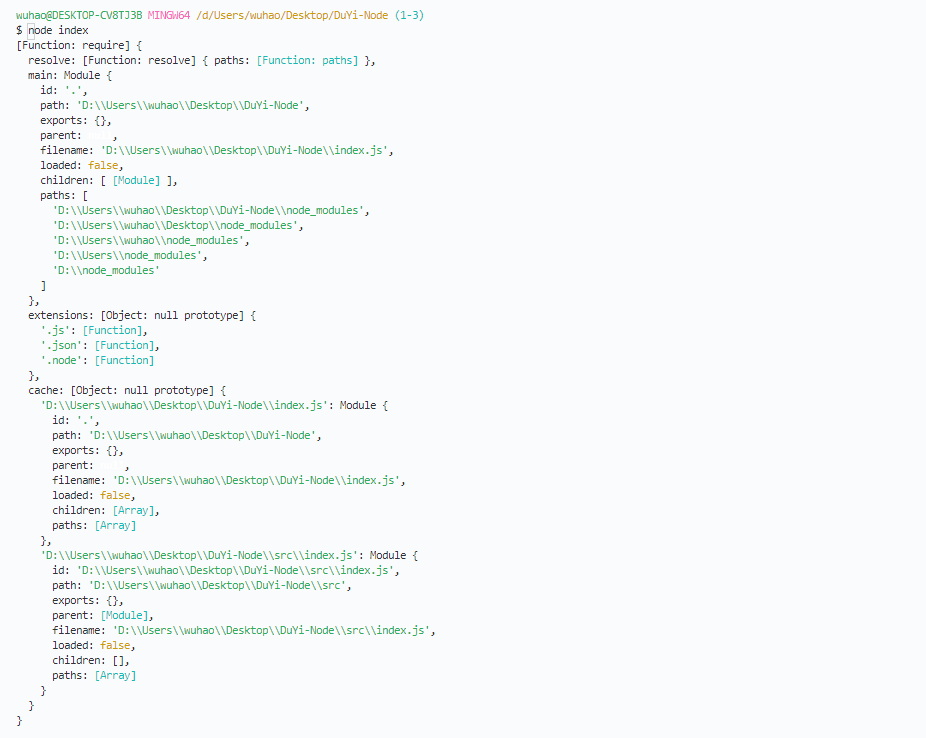

一、模块查找
1.1 绝对路径
- 其他路径最终也会转化成绝对路径
require("D:\\repository\\NodeJS\\源码\\a.js"); |
1.2 以./ ../开头的相对路径
1.3 没有./ ../开头的相对路径
- 查找顺序
先检查是否为内置模块(内置模块:安装node之后自带的模块),如fs、path
然后检查当前目录的node_modules
然后检查上级目录中的node_modules
然后转化为绝对路径
然后加载模块



- 后缀名
如果不提供后缀名自动补全
后缀名补全顺序：js、json、node、mjs
- 关于文件名
引入我们自己写的模块：如果仅提供目录，不提供文件名，则自动寻找该目录中的index.js
引入另外一个包：package.json中的main字段
表示包的默认入口
导入或执行包时若仅提供目录，则使用main补全入口
默认值为index.js
<!-- package.json --> |
二、module对象

三、require函数

四、node模块化原理
// 模块myModule.js代码 |
// 模块化实现原理伪代码 |